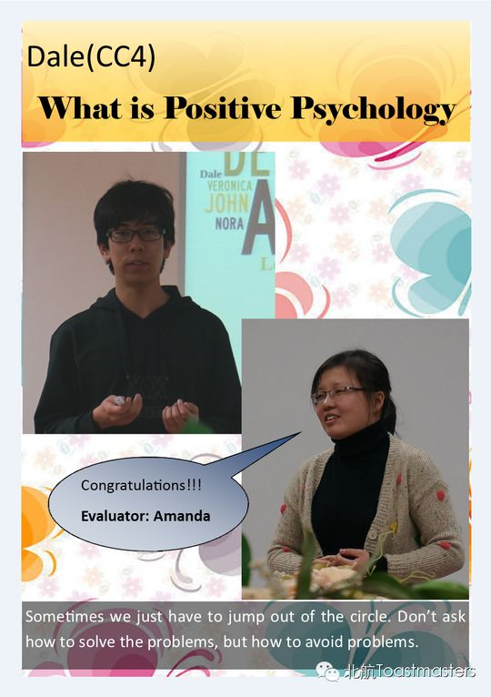
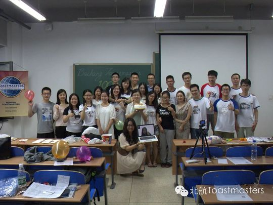
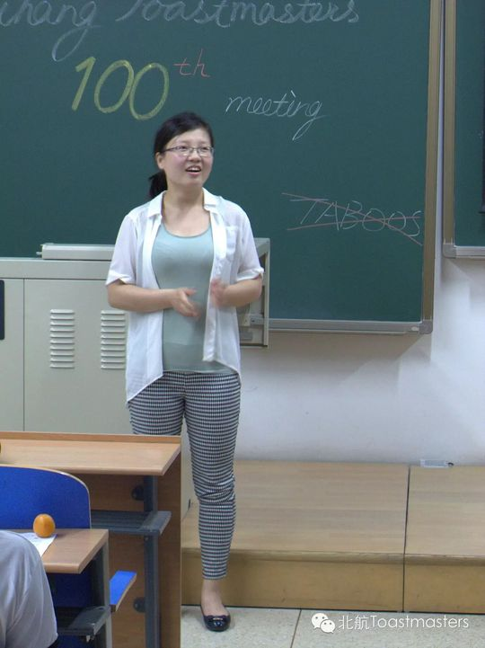
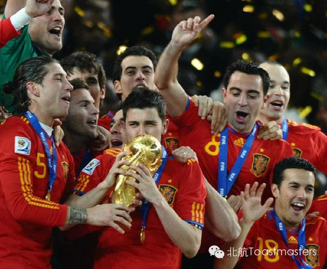

Amanda
一位以点评与主持见长的资深会员，用稳健的台风陪伴俱乐部走过一个个夜晚，最后在毕业季优雅告别。
会员活跃 2014–2014出现 7 次 · 7 篇
Amanda 是北航 Toastmasters 在 2014 年上半年的活跃骨干。从第 50 次到第 65 次例会的记录里，几乎每一次都能看到她的名字，而且大多出现在需要担当与判断的位置：总点评官（General Evaluator）、即兴点评官（Table Topic Evaluator）、以及会议主持人（Toastmaster）。她不是那种站在聚光灯下做长篇备稿演讲的人，而是那个把控全场节奏、为别人的成长给出反馈的人。
在俱乐部 2014 年 4 月的成员成长榜上，Amanda 以 4 次担任角色（TM、两次 GE、TTE）位列第四，是当时承担职责最多的成员之一，仅次于 Peter、Deron 和 Jason。第 53 次例会上她作为主持人带领大家探讨"文化差异"这一主题，从思维方式、传统、饮食到价值观，引导成员在差异中寻找共通；在"We Media""MONEY""新学期新开始"等多次例会中，她则坐在总点评的位置上，为整场会议把脉。
2014 年 6 月，毕业季来临。第 64 次例会成了她和 Jocelyn、Jason、Shawn 四人的告别会——俱乐部没有安排备稿演讲，而是用游戏、回顾与特别奖项为他们送别。正如俱乐部所说，他们在北航 Toastmasters 的经历让他们"变得更自信、更有能力"，而这场告别意味着的是"see you later"。就在告别的同一周，她仍以即兴点评官的身份出现在第 65 次例会的预告里，站好了最后一班岗。
担任过的职责
总点评官 General Evaluator×3即兴点评官 Table Topic Evaluator×2Toastmaster 会议主持人
里程碑
- 2014-03-06 活跃于俱乐部例会第50次例会担任总点评官，是其在记录中最早出现的身影。
- 2014-03-27 主持'文化差异'例会第53次例会担任Toastmaster主持人，独当一面把控全场。
- 2014-04-08 登上成员成长榜第4名以4次任职(TM、GE×2、TTE)位列俱乐部成员承担角色排行榜第四。
- 2014-06-20 毕业告别会第64次例会与Jocelyn、Jason、Shawn一同接受俱乐部的特别送别与回顾奖项。
- 2014-06-27 站好最后一班岗告别同周仍在第65次例会担任即兴点评官。
为俱乐部做的事
- 多次担任总点评官(GE)，为整场例会的运行与成员表现给出系统反馈
- 担任即兴环节点评官(TTE)，帮助成员提升即兴表达能力
- 主持第53次'文化差异'例会，承担Toastmaster的全场组织职责
- 作为承担角色最多的成员之一(成长榜第4名)，长期为俱乐部例会的稳定运转提供支撑
照片墙 · 时间线
共 6 帧，其中 4 帧已用人脸识别确认是本人（带 ✓）。

✓ ✓
✓
✓
✓
